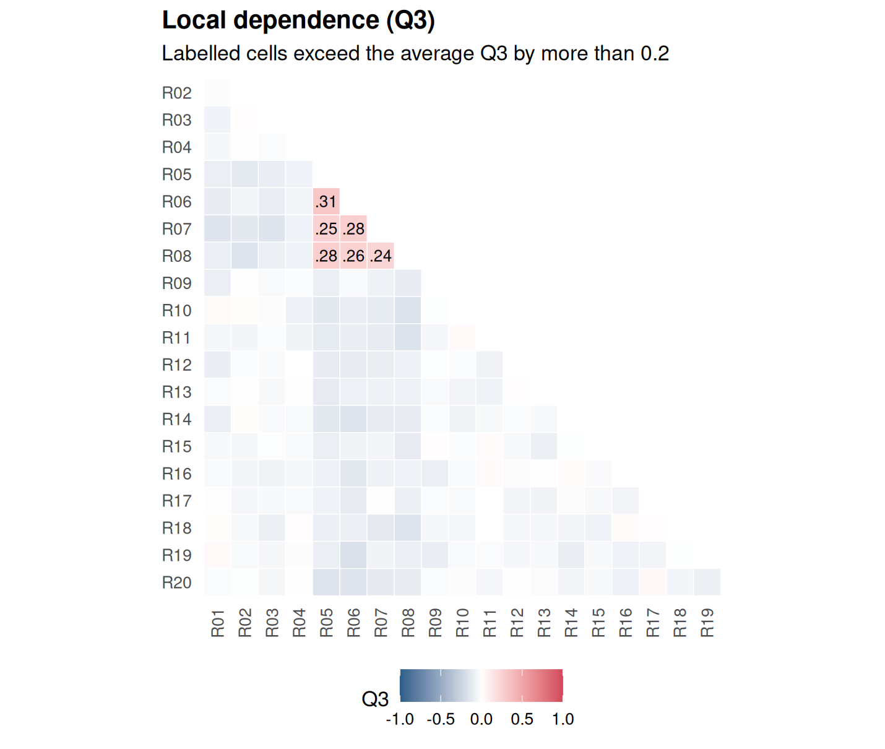

Chapter 4 Dimensionality and local independence
Learning goals. After this chapter you can
- explain the assumptions of unidimensionality and local independence;
- compare one- and two-factor models and read rotated factor loadings;
- fit a confirmatory model in which each item measures a named dimension;
- read standardized residuals and Yen’s Q3, and tell local dependence from a second trait;
- choose a remedy for locally dependent items.
Key terms: dimensionality, local independence, local dependence, Q3, multidimensional IRT.
4.1 The ideas
The models in Chapter 2 make two related assumptions. Unidimensionality says that one latent trait accounts for the relationships among the items. Local independence says that once we know a person’s \(\theta\), their responses to different items are independent: The only reason two items correlate is that both depend on \(\theta\).
Both can fail, in different ways.
- A test may measure two or more traits, for example reading and arithmetic in a set of mathematics word problems. Then a one-factor model forces two traits into one score, and the items of the smaller dimension look poorly discriminating.
- A small cluster of items may share something beyond the trait: A common reading passage, a shared stimulus, near-identical wording, or an item whose answer gives away the next. These pairs or clusters are locally dependent. They look like extra-good items, they inflate reliability, and they distort the item parameters.
The tools differ too. For the first problem we compare models with one and two factors and look at the factor loadings. For the second we look at what is left over after fitting a one-factor model: If local independence holds, the residual correlations between item pairs should be close to zero. Yen’s Q3 statistic (Yen 1984) is the correlation between two items’ residuals. Values well above the average Q3 (often by 0.2 or more) flag dependent pairs.
4.2 Example 1: A mathematics test with a reading dimension
We simulate a 24-item mathematics test taken by 1,500 Grade 8 students. Items M01 to M12 are calculation items. Items W01 to W12 are word problems that also depend on reading, which correlates 0.5 with calculation skill.
# Simulated 24-item test, two correlated traits (r = 0.5), 12 items each.
set.seed(404)
a <- cbind(c(runif(12, 1.0, 2.0), runif(12, 0.3, 0.6)),
c(rep(0, 12), runif(12, 1.0, 1.8)))
d <- matrix(rnorm(24, 0, 0.8))
sigma <- matrix(c(1, 0.5, 0.5, 1), 2)
resp <- simdata(a, d, N = 1500, itemtype = "2PL", sigma = sigma)
colnames(resp) <- c(sprintf("M%02d", 1:12), sprintf("W%02d", 1:12))First, an exploratory comparison of one and two factors. We keep a copy of
the data as math for the exercises.
math <- resp
f1 <- mirt(resp, 1, itemtype = "2PL", verbose = FALSE)
f2 <- mirt(resp, 2, itemtype = "2PL", verbose = FALSE)
anova(f1, f2)
#> AIC SABIC HQ BIC logLik X2 df p
#> f1 41008 41111 41103 41263 -20456
#> f2 40185 40337 40326 40563 -20022 868.777 23 0The two-factor model is far better on every criterion. summary() shows the
standardized loadings after an oblique rotation, which lets the factors
correlate:
summary(f2, rotate = "oblimin", suppress = 0.25)
#>
#> Rotation: oblimin
#>
#> Rotated factor loadings:
#>
#> F1 F2 h2
#> M01 0.708 0.509
#> M02 0.717 0.504
#> M03 0.663 0.453
#> M04 0.628 0.453
#> M05 0.581 0.360
#> M06 0.598 0.394
#> M07 0.665 0.398
#> M08 0.559 0.281
#> M09 0.473 0.233
#> M10 0.617 0.390
#> M11 0.715 0.539
#> M12 0.724 0.492
#> W01 0.634 0.428
#> W02 0.520 0.430
#> W03 0.751 0.572
#> W04 0.646 0.444
#> W05 0.588 0.373
#> W06 0.737 0.512
#> W07 0.560 0.451
#> W08 0.785 0.600
#> W09 0.697 0.484
#> W10 0.766 0.570
#> W11 0.775 0.555
#> W12 0.716 0.486
#>
#> Rotated SS loadings: 5.67 5
#>
#> Factor correlations:
#>
#> F1 F2
#> F1 1.000
#> F2 0.654 1The calculation items load on one factor and the word problems on the other. The factor correlation is higher than the 0.5 we simulated between the two traits, because the word problems also need calculation skill: The rotation cannot separate that shared part cleanly, so some of it shows up as correlation between the factors. The one-factor fit statistics give the same message from the other side:
rbind(one_factor = glance(f1)[, c("RMSEA", "SRMSR", "CFI")],
two_factor = glance(f2)[, c("RMSEA", "SRMSR", "CFI")])
#> # A tibble: 2 × 3
#> RMSEA SRMSR CFI
#> * <dbl> <dbl> <dbl>
#> 1 0.0644 0.0518 0.936
#> 2 0 0.0173 1Exploratory models are useful for finding structure. When the structure is
known from the test blueprint, a confirmatory model states it directly.
Each item loads only on its own factor, and the factor correlation is
estimated (COV = F1*F2):
spec <- mirt.model("Calc = 1-12
Reading = 13-24
COV = Calc*Reading")
cfa <- mirt(resp, spec, itemtype = "2PL", verbose = FALSE)
coef(cfa, simplify = TRUE)$cov
#> Calc Reading
#> Calc 1.000 0.676
#> Reading 0.676 1.000
anova(cfa, f2)
#> AIC SABIC HQ BIC logLik X2 df p
#> cfa 40174 40279 40271 40434 -20038
#> f2 40185 40337 40326 40563 -20022 32.658 22 0.067The confirmatory model is nearly as good as the exploratory one with far fewer parameters, so BIC prefers it. What should we report to the school? That depends on use. Two subscores are defensible if each is reliable enough (Chapter 6); a single total score mixes two skills, and students with weak reading will look weaker at mathematics than they are.
4.3 Example 2: A reading passage that ties four items together
In this test of 20 items, items R05 to R08 all refer to the same passage. Students who happen to understand the passage well do better on all four than their general reading ability predicts. We simulate this with a small extra factor that only those four items share.
# Simulated 20-item reading test; R05-R08 share a passage (testlet effect).
set.seed(405)
a_gen <- runif(20, 1.0, 1.8)
a_pas <- c(rep(0, 4), rep(2.0, 4), rep(0, 12))
resp <- simdata(cbind(a_gen, a_pas), matrix(rnorm(20, 0, 0.7)),
N = 1200, itemtype = "2PL")
colnames(resp) <- sprintf("R%02d", 1:20)We fit an ordinary unidimensional 2PL, as an analyst who did not know about the passage would, and look at the Q3 matrix.

Figure 4.1: Q3 residual correlations from a unidimensional 2PL fitted to the reading test with a four-item passage.
The six pairs among R05 to R08 stand out. Most other Q3 values are slightly negative, which is normal: Residuals are a little negatively correlated on average, so we judge a pair against the average Q3 rather than against zero. The numbers behind the plot:
q3 <- residuals(uni, type = "Q3", verbose = FALSE)
round(q3[5:8, 5:8], 2)
#> R05 R06 R07 R08
#> R05 1.00 0.31 0.25 0.28
#> R06 0.31 1.00 0.28 0.26
#> R07 0.25 0.28 1.00 0.24
#> R08 0.28 0.26 0.24 1.00Local dependence has a cost. The unidimensional model has nowhere to put the passage effect, so it bends the item parameters to accommodate it and treats part of the passage effect as reading ability. Remedy 1 below shows how different the passage items look once the dependence is modelled.
There are three common remedies.
- Model the dependence. A testlet or bifactor model gives the
passage items a specific factor of their own, uncorrelated with the
general factor.
bfactor()fits it; its second argument says which specific factor each item belongs to (NAfor none).
specific <- c(rep(NA, 4), rep(1, 4), rep(NA, 12))
bf <- bfactor(resp, specific, verbose = FALSE)
anova(uni, bf)
#> AIC SABIC HQ BIC logLik X2 df p
#> uni 28458 28534 28534 28661 -14189
#> bf 27901 27985 27985 28125 -13906 564.869 4 0
round(coef(bf, simplify = TRUE)$items[3:10, c("a1", "a2")], 2)
#> a1 a2
#> R03 1.51 0.00
#> R04 0.93 0.00
#> R05 1.44 2.11
#> R06 1.45 2.20
#> R07 1.27 1.76
#> R08 1.88 1.99
#> R09 1.38 0.00
#> R10 1.31 0.00The passage effect now has its own slope (a2), and the general slopes
(a1) of R05 to R08 are higher than in the unidimensional model, which
had diluted them. Compare them with
coef(uni, simplify = TRUE)$items[5:8, "a1"]. Likelihood-ratio test and
BIC both favour the bifactor model.
Combine the items. Sum R05 to R08 into one polytomous “super-item” scored 0 to 4 and fit a polytomous model (Chapter 8). This is simple and robust, at the cost of some information.
Drop or rewrite items in a future form, so that no two items depend on each other beyond the trait.
4.4 Your turn
- In Example 1, compute the sum score of the word problems and of the calculation items separately. How strongly do they correlate? Why is this lower than the factor correlation?
- Use
select_model(resp, dims = 1:2)on the data of Example 1. Which model does it choose? - In Example 2, compare the empirical reliability of the scores
(
empirical_rxx()onfscores(..., full.scores.SE = TRUE)) from the unidimensional model with that of the general factor of the bifactor model. Which one would you report, and why? - Make the super-item from R05 to R08, fit a graded model to the 17 items, and check the Q3 matrix again.
Solutions
- Sum scores contain measurement error, which attenuates (weakens) the correlation; the factor correlation is corrected for it.
select_model(math, dims = 1:2, verbose = FALSE)
#> mirtverse model selection (ranked by BIC)
#>
#> model npar logLik AIC BIC SABIC RMSEA CFI delta weight
#> 2PL (2F) 71 -20022 40185 40563 40337 0.000 1.000 0 1
#> Rasch 25 -20526 41102 41235 41156 0.064 0.931 673 0
#> 2PL 48 -20456 41008 41263 41111 0.064 0.936 701 0
#> 3PL 72 -20450 41044 41426 41198 0.064 0.942 864 0
#>
#> The 2PL (2F) model is recommended because it has the lowest BIC (40562.7). The
#> runner-up, Rasch, is 672.6 BIC points worse, which is very strong evidence for
#> the 2PL (2F) model. Likelihood-ratio test Rasch vs. 2PL (2F): chi-square(46) =
#> 1008.97, p < .001; the 2PL (2F) model fits significantly better.
#> Likelihood-ratio test 2PL vs. 2PL (2F): chi-square(23) = 868.78, p < .001; the
#> 2PL (2F) model fits significantly better. Absolute fit of the 2PL (2F) model:
#> RMSEA = 0.000 (close fit), CFI = 1.000, SRMSR = 0.017.- It fits one- and two-factor versions of each candidate and should prefer a two-factor model, because the second dimension is strong.
empirical_rxx(fscores(uni, full.scores.SE = TRUE))
#> F1
#> 0.85
empirical_rxx(fscores(bf, full.scores.SE = TRUE))
#> G S1
#> 0.838 0.587- The unidimensional model reports a somewhat higher reliability, because it counts the shared passage effect as signal about reading. The general factor of the bifactor model gives the more honest figure. With one small passage the difference is modest; with several passages it grows.
super <- data.frame(resp[, -(5:8)], R05_08 = rowSums(resp[, 5:8]))
sup <- mirt(super, 1, itemtype = c(rep("2PL", 16), "graded"), verbose = FALSE)
q3s <- residuals(sup, type = "Q3", verbose = FALSE)
max(abs(q3s[upper.tri(q3s)]))
#> [1] 0.131- The super-item removes the dependent pairs, and the largest remaining Q3 is small.